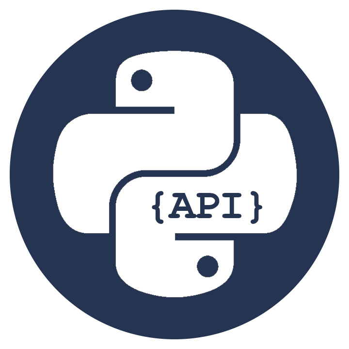
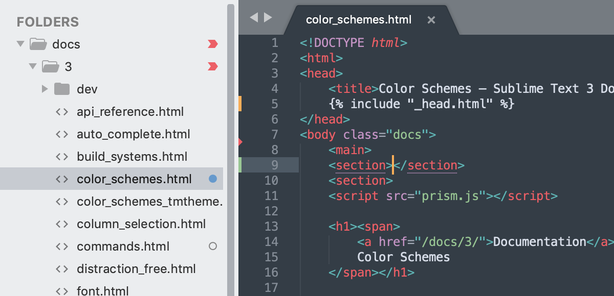

A Sublime Text editor
A Sublime Text egy forráskód-szerkesztő, amely Windows, macOS és Linux rendszerekhez érhető el.
Natívan támogat számos programozási nyelvet és jelölőnyelvet. A felhasználók testre szabhatják témákkal, és bővíthetik funkcionalitásukat beépülő modulokkal, amelyek jellemzően közösség által építettek és ingyenes szoftverlicencek alatt karbantarthatók.
A beépülő modulok megkönnyítése érdekében a Sublime Text Python API-t tartalmaz.
A szerkesztő minimális felületet használ, és olyan funkciókat tartalmaz a programozók számára, mint a
- konfigurálható szintaxis kiemelés
- kódhajtogatás
- keresés és csere a reguláris kifejezések támogatásával
- terminál kimeneti ablaka
és még sok más.
Ez egy szabadalmaztatott szoftver, de ingyenes kiértékelő verzió is elérhető.
- Sebesség: Az editor nagyon gyorsan elindul, és az egyéb funkciói is kellemesen gyorsak. Ráadásul a legfrissebb blogbejegyzésük szerint ezen a téren további javulást sikerült elérni. 
- Letisztult felület: Egy a böngészőkre (konkrétan a Chrome-ra) emlékeztető felhasználói felület fogad minket. A fülek, az alap gyorsbillentyűk tovább erősítik ezt a benyomást, otthonosan lehet mozogni.
- Testreszabhatóság: Elég komolyan lehet konfigolni, TextMate kompatibilis kódszínezést és témákat tud (a TextMate-hez pedig rengeteg ilyen elérhető), és komoly plugin architektúrája van, egy plugin nagyon sokmindent meg tud csinálni. A plugineket Pythonban lehet kódolni.
- Makrózás: Könnyen lehet felvenni makrókat és lejátszani azokat.
- Oszlopos és többszörös kiválasztás: Nem csak egybefüggő szövegek, hanem oszlopok is kiválaszthatók, illetve több kiválasztásunk is lehet egyszerre. Ez utóbbi segítségével egyszerre több helyen is gépelhetünk például a kódban (refaktoráláskor lehet hasznos).
- Projektek: Bármely könyvtárból elindítható az editor, és azt a könyvtárat tudja projektként kezelni különösebb konfigurálás nélkül.
- Vi kompatibilitás: A vi kedvelőknek fontos lehet: be lehet állítani vi kompatibilisre a szerkesztőt.
2007–ben alkotója, Jon Skinner felhagyott a Google-nél, hogy megvalósítsa egyik álmát: egy jobb szövegszerkesztőt hozzon létre.